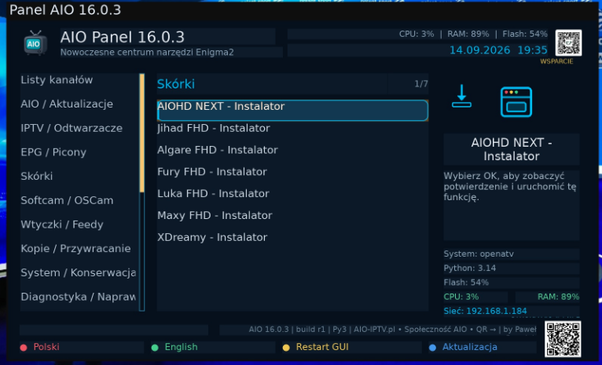
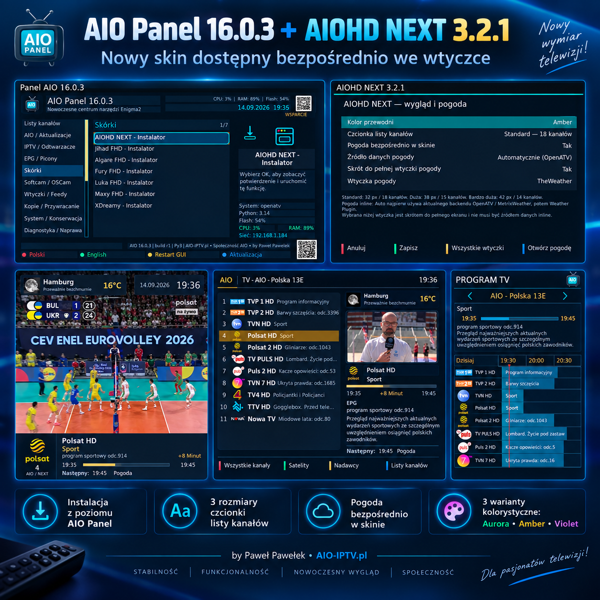

Witam na mojej stronie Paweł Pawełek
Aktualizacja • 14.09.2026
⚙️ AIO Panel 16.0.3
Wersja 16.0.3 jest celową, małą aktualizacją AIO Panel: do sekcji Skórki dodano bezpośrednią instalację nowego projektu AIOHD NEXT 3.2.1. Pozostałe funkcje panelu pozostają bez zmian.

Nowość w AIO Panel 16.0.3
- dodano AIOHD NEXT 3.2.1 jako pierwszą pozycję w sekcji Skórki
- instalacja korzysta z oficjalnego wydania GitHub projektu AIOHD NEXT
- pozycja dostępna jest w polskiej i angielskiej wersji AIO Panel
- dotychczasowe instalatory i polecenia nie zostały zmienione
- zachowano naprawy 16.0.2: mechanizm aktualizacji, oscam.srvid/srvid2, SoftCam.Key, komunikaty operacji oraz Listy kanałów jako pierwszą zakładkę
🎨 AIOHD NEXT w AIO Panel
Wejdź w Skórki → AIOHD NEXT - Instalator, potwierdź instalację i po jej zakończeniu wykonaj Restart GUI. Skin można również pobrać osobno ze strony projektu.
✅ Bez zmian w pozostałych funkcjach
Wersja 16.0.3 nie jest kolejną przebudową AIO Panel. Jej celem było wyłącznie dodanie własnego skina do listy instalatorów i zachowanie stabilnej bazy 16.0.2.
Plik i zgodność
Wersja: 16.0.3
Data wydania: 14.09.2026
Plik: enigma2-plugin-extensions-panelaio_16.0.3_all.ipk — 389.4 KB
SHA-256: ad2a71fe2d6a39eaa7e3fdc9cb1352db2679ea4dd50ac770c4950e38588e1fff
Platforma: Enigma2 • Python 2 / Python 3.
Autor: Paweł Pawełek / AIO Team.
Galeria

Instalacja i aktualizacja AIO Panel
Po instalacji lub aktualizacji wykonaj Restart GUI.
wget -q -O - "https://raw.githubusercontent.com/OliOli2013/PanelAIO-Plugin/main/installer.sh?$(date +%s)" | /bin/shInstalacja pobranego IPK przez FTP
Wgraj plik do /tmp, a następnie wykonaj:
opkg install --force-reinstall /tmp/enigma2-plugin-extensions-panelaio_16.0.3_all.ipkAIO Panel 16.0.3 oraz nowy projekt AIOHD NEXT 3.2.1 są dostępne do pobrania.